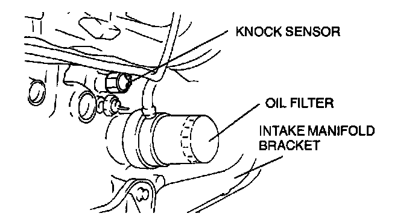

Knock Sensor: Service and Repair
1. Disconnect the negative battery cable.2. Remove the intake manifold bracket.

3. Remove the knock sensor by using the SST (49 H018 001).
4. Install in the reverse order of removal.
Tightening torque: 19.6-34.3 Nm (2.0-3.5 kg.m, 14.5-25.3 ft.lb)